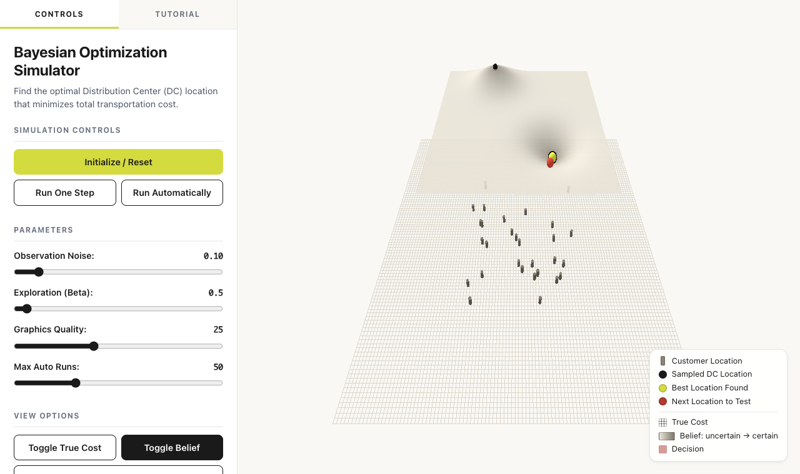
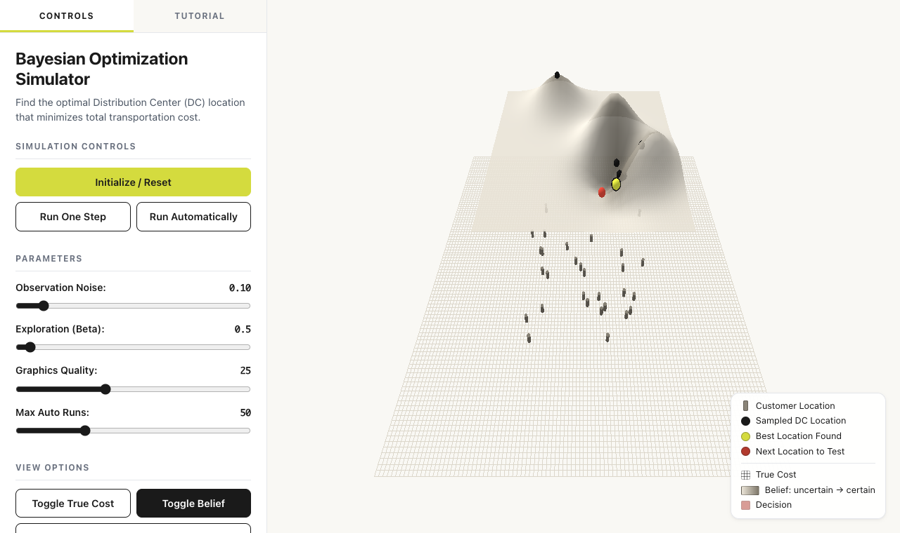
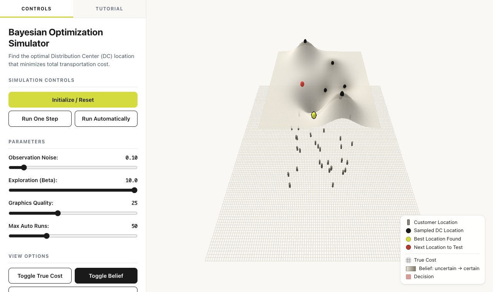

Vier taken van leiderschap, elk met een eigen vraag
Elke dag begint en eindigt met deze vier vragen. Om 9:30 schreef je op de vragenkaart je eerste antwoorden: de nulmeting. Die laat je staan. Aan het eind van de dag schrijf je eronder wat er veranderde.
-
V1Richting
Hoe bepaal ik een strategie als elk plan door de realiteit wordt ingehaald voordat het op papier staat?
Taak: richting geven.
-
V2Transformeren
Hoe transformeer ik de organisatie onder snel veranderende omstandigheden en houd ik de huidige business robuust?
Taak: voorwaarden scheppen voor verandering.
-
V3Investeren
Hoe zorg ik dat mijn investeringen veilig zijn terwijl de toekomst onzeker is?
Taak: middelen toewijzen.
-
V4Roadmap
Hoe bouw ik een roadmap met mijlpalen als na stap 1 onduidelijk is of stap 2 de beste volgende is?
Taak: een roadmap met prioriteiten, mijlpalen en uitwijkroutes.
Het zijn weerbarstige vraagstukken
Rittel en Webber (1973) noemen zulke vragen wicked problems: weerbarstige vraagstukken. Ze geven tien kenmerken. Vijf daarvan zie je terug in de vier vragen.
-
Geen vaste formulering
Hoe je het probleem opschrijft, bepaalt al welke oplossing je ziet.
V1RichtingVoorbeeld BVGaat het om klachten sneller afhandelen, of om het aanspreekpunt van de klant blijven? Elke formulering geeft een andere strategie.
-
Elke poging telt
Je kunt niet oefenen op de echte organisatie. Elke ingreep laat sporen na en verandert het probleem.
V2TransformerenVoorbeeld BVEen nieuwe werkwijze bij Klantcontact merken klanten en medewerkers meteen. Ook als je stopt, is de situatie anders dan ervoor.
-
Beter of slechter, niet goed of fout
Er is geen toets die zegt dat een oplossing juist is.
V3InvesterenVoorbeeld BVEen investering is nooit gewoon veilig. Je kunt hooguit zeggen dat de ene inzet veiliger is dan de andere.
-
Elk probleem is uniek
Wat elders werkte, is een idee. Het bewijst niets over jouw organisatie.
V3InvesterenVoorbeeld BVHet rendement dat een leverancier noemt, komt uit een andere organisatie. Het zegt weinig over Voorbeeld BV.
-
Geen stopregel
Je weet nooit wanneer je klaar bent. Je stopt omdat tijd, geld of geduld op is.
V4RoadmapVoorbeeld BVDe roadmap van Voorbeeld BV is nooit af. Na elke stap komt een nieuwe keuze.
Het gevolg: je lost ze niet één keer op. Je blijft eraan werken. Daarom komen de vier vragen elke dag terug, en vergelijk je elk antwoord met je vorige.
Verkennen en benutten
Benutten exploitation
Beter worden in wat je al doet: verfijnen, efficiënter werken, uitvoeren. Het rendement is zeker en komt snel.
Verkennen exploration
Zoeken naar wat nieuw is: proberen, variëren, experimenteren. Het rendement is onzeker en komt later.
Organisaties schuiven vanzelf naar benutten, want dat betaalt sneller en zekerder uit (March, 1991). Zolang de wereld hetzelfde blijft, gaat dat goed. Verandert de wereld, dan word je steeds beter in iets wat minder waard wordt.
De meerarmige bandiet en Bayesiaans optimaliseren
De meerarmige bandiet
Voor je staan tien gokautomaten, elk met een eigen arm. Elke automaat betaalt anders uit, maar hoeveel weet je niet.
Trek je aan de arm die tot nu toe het meest gaf? Dat is benutten. Probeer je een andere? Dat is verkennen.
Wie alleen benut, mist misschien de beste automaat. Wie alleen verkent, verspeelt zijn geld aan slechte.
Bayesiaans optimaliseren
Hetzelfde patroon, met heel veel armen: elke plek op een kaart is een keuze (Shahriari e.a., 2016). Het werkt met twee onderdelen:
- een model van wat je denkt, met je onzekerheid erbij;
- een regel die op grond daarvan de volgende test kiest.
De schuif β (bèta) bepaalt hoeveel die regel verkent. Bij een lage β test je waar het al goed lijkt. Bij een hoge β test je waar je het minst weet.
En AI zelf? In een strategiesimulatie verdedigden de nieuwste taalmodellen de oude technologie en investeerden ze nauwelijks in de nieuwe. Ze scoorden lager dan MBA-studenten (Allen & McDonald, 2026). Vraag je een AI om strategisch advies, verken dan zelf.
Zelf proberen 5 minuten
De simulator zoekt de beste plek voor een distributiecentrum: de laagste transportkosten naar dertig klanten. Elke test is een dure haalbaarheidsstudie. De knoppen zijn Engels.
- Zet Exploration (Beta) op 0,5 en klik op Initialize / Reset.
- Voorspel: komt de volgende test (de rode bol) dicht bij de beste plek (geel), of ver weg waar het model het minst weet?
- Klik vijf keer op Run One Step. Kijk waar de zwarte bollen liggen.
- Zet β op 10, klik op Initialize / Reset en weer vijf keer op Run One Step.
- Wat zie je? Wat verschilt er, en klopte je voorspelling?
| In de simulator | Wat het betekent |
|---|---|
| Initialize / Reset | Begin opnieuw met twee tests op een willekeurige plek. |
| Run One Step | Eén stap: test de plek van de rode bol. Daarna werkt het model zijn beeld bij en kiest het de volgende. |
| Run Automatically | Stappen achter elkaar. Klik op "Stop" om te stoppen. |
| Observation Noise | De meetfout: hoe onbetrouwbaar één test is. |
| Exploration (Beta) | β: hoeveel de regel verkent. |
| Toggle True Cost | De echte kosten, als zwarte draadjes. In het echt ken je die niet. |
| Toggle Belief | Wat het model denkt. Bleek is onzeker, grijs is zekerder. |
| Toggle Decision | De regel, als rood vlak. De volgende test komt waar dit vlak het laagst is. |
| Best Cost Found | De laagste kosten tot nu toe. |
| Kleuren | klant · al getest · beste plek tot nu toe · volgende test |
Lage β. De tests bleven bij de beste plek. De regel benut wat hij al weet. Dat gaat snel, maar een betere plek verderop vindt hij zo niet.
Hoge β. De tests lagen verspreid over het veld. De regel verkent waar hij het minst weet. Dat kost meer tests, en soms vindt hij zo een betere plek.
Wat je over het onbekende aanneemt, bepaalt hoeveel je verkent.
En jij? Bij welke van je vier vragen zit jij nu op een lage β?

(groot, in een nieuw tabblad)
(groot, in een nieuw tabblad)
(groot, in een nieuw tabblad)Reële opties en de deur die terug kan
Een kleine inzet koopt het recht, niet de plicht, om door te gaan. Dat heet een reële optie (Myers, 1977; McGrath, 1999). Verkennen is een optie kopen. Benutten is haar uitoefenen.
De deur die terug kan (two-way door)
De meeste besluiten. Bevalt het niet, dan loop je terug door dezelfde deur. Besluit snel en klein.
De deur die niet terug kan (one-way door)
Een paar besluiten. Wat je doet, is niet of nauwelijks terug te draaien. Besluit langzaam en met bewijs. Koop eerst een optie die de deur openhoudt.
Naar Jeff Bezos, in zijn brief aan de aandeelhouders over 2015 (Bezos, 2016).
Voorbeeld BV: twee besluiten
Eén team van Klantcontact laat de AI zes weken meesorteren. De AI stelt een categorie en een urgentie voor, de medewerker beslist.
Norm vooraf: de AI kiest bij minstens 8 van de 10 klachten dezelfde urgentie als de medewerker, en mist geen ernstige klacht.
Snel en klein. Haalt de AI de norm niet, dan stopt het team en werkt het weer zoals nu.
Vaste installateur worden van één fabrikant, met een contract van vijf jaar, en Klantcontact afbouwen omdat de fabrikant het klantcontact overneemt.
Langzaam en met bewijs. Klanten die je aan de fabrikant geeft, krijg je niet terug.
Service Zuid werkt een jaar voor één fabrikant, naast het eigen klantcontact, met een contract per opdracht.
De optie moet laten zien wat een opdracht van de fabrikant oplevert, en hoeveel klanten in Zuid daarna nog Voorbeeld BV bellen. Pas dan gaat de deur dicht of blijft hij open.
Dag 2 bouwt hierop verder. Dan zet je je eigen kansen op de portfoliokaart en noem je bij elke kans het besluit dat eraan vastzit: kan die deur terug?
Wat is hier verkennen, wat benutten?
-
V1RichtingBenutten
De koers "vast aanspreekpunt" vasthouden en meten hoeveel klanten een abonnement kiezen.
VerkennenDe rol van vaste installateur verkennen, als tweede richting met een eigen signaal.
-
V2TransformerenBenutten
Klantcontact, Planning en Service werken door en verbeteren wat werkt. Ernstige klachten blijven mensenwerk.
VerkennenEén team werkt zes weken met een AI die meesorteert.
-
V3InvesterenBenutten
Geld naar wat al werkt: het onderhoud en de kennisbank.
VerkennenKleine inzetten met een norm vooraf. Bij een deur die niet terug kan, eerst een optie.
-
V4RoadmapBenutten
Opschalen wat de norm haalt.
VerkennenNa elke stap kijken of een andere plek op de kansenkaart meer belooft: de uitwijkroute.
Jouw casus
- Schrijf per vraag één zin: wat is hier verkennen, en wat benutten? Bij V3 hoort de vraag: kan deze deur terug?
- Pak je vragenkaart. Laat je nulmeting staan, en zet je zin in de kantlijn. In de afsluiting om 16:00 herschrijf je je antwoorden.
- Zet er één regel bij: wat veranderde er, en waarom?
Nulmeting: we schrijven in het eerste kwartaal een AI-strategie voor vijf jaar, met als doel dat wij het eerste aanspreekpunt van de klant blijven. Het MT stelt het plan vast, en daarna voeren we het uit.
Na dag 1: onze koers is het vaste aanspreekpunt van de klant blijven, met een onderhoudsabonnement. Elk doel heeft een signaal om het los te laten. Gaan de meeste storingen in 2027 rechtstreeks naar de fabrikant, dan kiezen we opnieuw tussen aanspreekpunt en vaste installateur.
Van een plan voor vijf jaar naar een koers met loslaatsignalen. Fabrikanten en AI-assistenten veranderen de vraag sneller dan een plan meegaat.
Nulmeting: we voeren in 2027 een nieuw klantsysteem met AI in, voor alle afdelingen tegelijk. Klantcontact krijgt een training en werkt daarna op de nieuwe manier.
Na dag 1: twee sporen naast elkaar. Klantcontact, Planning en Service werken door en verbeteren wat werkt, en ernstige klachten blijven mensenwerk. Eén team van Klantcontact werkt zes weken met een AI die meesorteert, en pas wat daar werkt, gaat naar de andere teams.
Van één grote omschakeling naar twee sporen. Een omschakeling in het hele bedrijf kun je niet terugdraaien, en de klanten van nu moeten geholpen blijven.
Nulmeting: we maken een businesscase voor het hele AI-project, met een terugverdientijd van twee jaar. Na een aanbesteding kiezen we één leverancier voor vijf jaar.
Na dag 1: we zetten eerst klein in: zes weken AI-sorteren in één team, met vooraf een norm. Bij elk besluit vragen we: kan deze deur terug? Een besluit dat niet terug kan, nemen we pas na een optie die de deur openhoudt.
Van één grote, veilige investering naar kleine inzetten die het recht kopen om door te gaan. Niemand kent vooraf het rendement van iets nieuws.
Nulmeting: in 2027 elk kwartaal een mijlpaal: de aanbesteding, de bouw, de invoering bij alle afdelingen en de evaluatie. Elke mijlpaal heeft een datum en een eigenaar.
Na dag 1: een roadmap als reeks beslispunten, van experiment via pilot naar opschaling, met bij elke mijlpaal een gate (beslismoment) en een uitwijkroute. Haalt het meesorteren de norm niet, dan gaan we naar patronen over de afdelingen heen (plek 4). Wat stap 2 wordt, besluiten we na stap 1.
Van een planning met datums naar beslispunten. Pas na elke stap weet je wat de beste volgende is (de meerarmige bandiet).
Bronnen
- Allen, R. T., & McDonald, R. M. (2026). How well can AI do strategy? Empirical benchmarking using strategy simulations. Strategy Science, 11(1), 93–117. https://doi.org/10.1287/stsc.2025.0444
- Bezos, J. P. (2016). 2015 letter to shareholders. Amazon.com.
- March, J. G. (1991). Exploration and exploitation in organizational learning. Organization Science, 2(1), 71–87. https://doi.org/10.1287/orsc.2.1.71
- McGrath, R. G. (1999). Falling forward: Real options reasoning and entrepreneurial failure. Academy of Management Review, 24(1), 13–30. https://doi.org/10.5465/amr.1999.1580438
- Myers, S. C. (1977). Determinants of corporate borrowing. Journal of Financial Economics, 5(2), 147–175. https://doi.org/10.1016/0304-405X(77)90015-0
- Osterwalder, A., Pigneur, Y., Etiemble, F., & Smith, A. (2020). The invincible company. Wiley.
- Rittel, H. W. J., & Webber, M. M. (1973). Dilemmas in a general theory of planning. Policy Sciences, 4(2), 155–169. https://doi.org/10.1007/BF01405730
- Shahriari, B., Swersky, K., Wang, Z., Adams, R. P., & de Freitas, N. (2016). Taking the human out of the loop: A review of Bayesian optimization. Proceedings of the IEEE, 104(1), 148–175. https://doi.org/10.1109/JPROC.2015.2494218